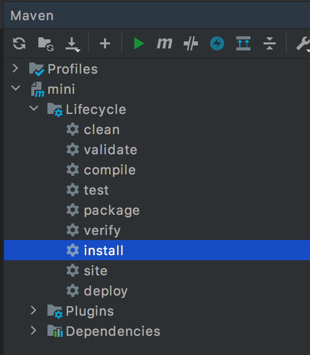
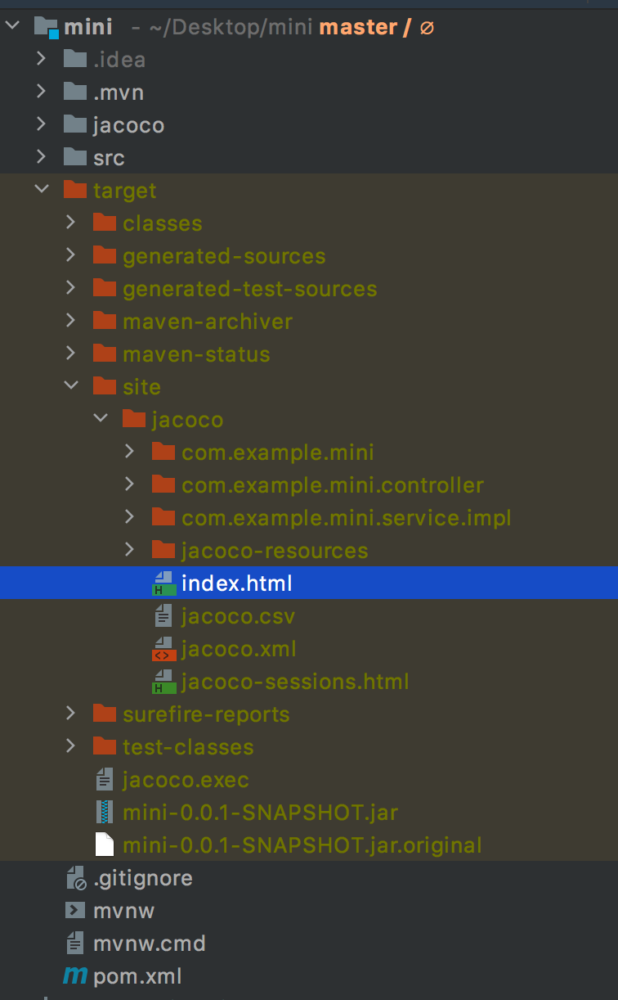
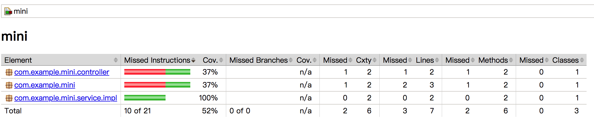
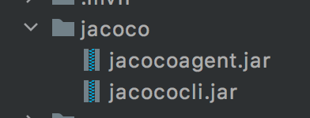
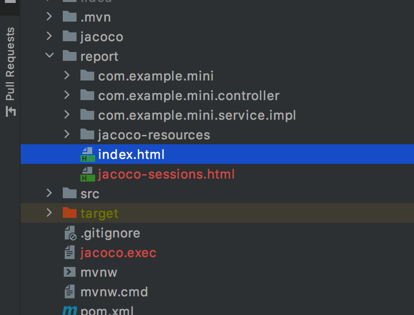
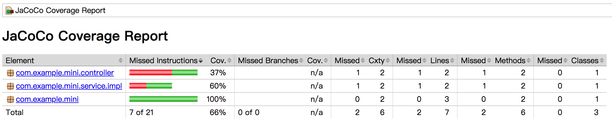
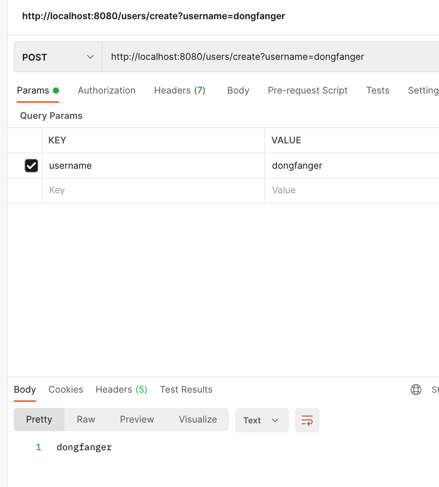
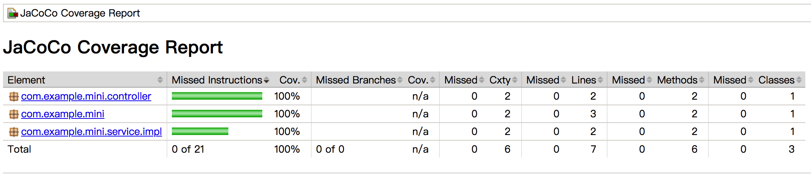

本书作者：测试开发刚哥，文章版权归个人所有，未经授权请勿转载。
静态接入和动态接入
SpingBoot可以通过2种方式接入JaCoCo：Maven和Agent。Maven方式是静态接入，在编译时计算代码覆盖率。Agent方式是动态接入，服务启起来以后，能实时根据代码命中情况计算代码覆盖率。
教程代码已上传开源项目：https://github.com/dongfanger/mini
Maven
pom.xml添加依赖：
<dependency>
<groupId>org.jacoco</groupId>
<artifactId>jacoco-maven-plugin</artifactId>
<version>0.8.7</version>
</dependency>
添加配置：
<build>
<plugins>
<plugin>
<groupId>org.springframework.boot</groupId>
<artifactId>spring-boot-maven-plugin</artifactId>
<version>${project.parent.version}</version>
</plugin>
<plugin>
<groupId>org.jacoco</groupId>
<artifactId>jacoco-maven-plugin</artifactId>
<version>0.8.7</version>
<executions>
<execution>
<id>default-prepare-agent</id>
<goals>
<goal>prepare-agent</goal>
</goals>
</execution>
<execution>
<id>default-report</id>
<goals>
<goal>report</goal>
</goals>
</execution>
</executions>
</plugin>
</plugins>
</build>
点击maven的install：

target/site/jacoco目录下就生成了覆盖率报告：


Agent
下载jacoco文件后解压，提取2个文件：

使用命令启动SpringBoot，启动参数添加-javaagent：
java -javaagent:jacoco/jacocoagent.jar -jar target/mini-0.0.1-SNAPSHOT.jar
此时会生成1个jacoco.exec文件，这个文件就是覆盖率数据文件，采用以下命令根据数据文件生成HTML报告：
java -jar jacoco/jacococli.jar report jacoco.exec --classfiles ./target/classes/ --sourcefiles ./src/main/java/ --html ./report


接下来就来验证动态特性。把report目录和jacoco.exec都删了，因为jacoco每次部署只能分析一次。把服务停掉后，重新启动。这一次不直接分析，而是先用postman调一下接口：

然后再分析一把：

可以看到覆盖率变成100%，说明postman调接口这个操作，命中了代码，被jacoco统计到了。javaagent相当于是个代理，在服务运行期间，所有调用都会经过javagent，这样就能实时统计代码覆盖率。换句话说，只要服务运行起来以后，只要你能命中代码，无论是跑单元测试还是调接口，或者是手工测试，都能生成代码覆盖率数据。